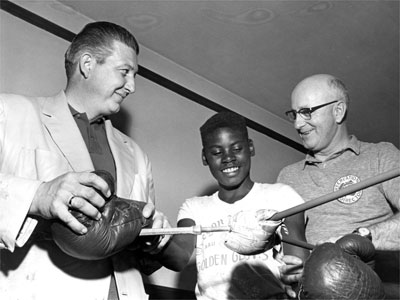

Portland Amateur Boxing
April
30,
1960
- March
31,
1962
?-December 18, 1965+?
?-December 17,
1966+?
January
6,
1973
-
February 1973+?
November 1973 - ?
February
1977
-
April
1977+?
|  |
|
Program
sponsor/car
dealer
Bud
Meadows
(left)
and
Knott
Street
boxing
coach
Clyde
Quisenberry
(right)
help
a
young
pugilist
prepare
for
the
next
match. |
|
Under the direction of the Portland Bureau of Parks and
the Oregon Amateur Athletic Association. Bouts were three rounds in
duration. KPTV's Gordon White was the announcer.
Live
amateur
matches
from
Portland's
Knott
Street
gym.
The
1973
edition
featured
matches
from
KPTV's
studios.
TV
Guide
ad
from
July
16,
1960.
| Portland
Amateur Boxing BROADCAST HISTORY |
APR
1960 - MAY 1960: SAT 9:30-10:30PM
MAY 1960 - SEP
1960
-
:
SAT
9:30PM-10:25PM
OCT 1960 - : SAT 7:00PM-7:55PM
JAN
1961
-
:
SAT
6:00PM-6:55PM
FEB
1962
-
MAR 1962: SAT 6:00PM-6:55PM
DEC 1964 - JAN 1965: SAT 6:30PM - 7:30PM
DEC 1965 - : SAT 8:30PM-9:30PM
DEC
1966
-
:
SAT
4:00PM-5:00PM
JAN
1973
-
FEB
1973:
SAT
3:30PM-4:00PM
NOV 1973 - :
SAT
3:00PM-3:30PM
FEB
1977
-
APR
1977+:
SAT
11:30AM-12:00PM
|
|

  
This
page
last
updated
on
August 17, 2025 |